import numpy as np
import matplotlib.pyplot as plt
import pandas as pd
#readin data
titanic_data = pd.read_csv("https://www4.stat.ncsu.edu/~online/datasets/titanic.csv")
#remove some columns and a bad row
sub_titanic_data = titanic_data.drop(columns = ["body", "cabin", "boat"], axis = 1) \
.iloc[:(titanic_data.shape[0]-1)]
#create category versions of the variables (some code omitted)
sub_titanic_data["embarkedC"] = sub_titanic_data.embarked.astype("category")
sub_titanic_data.embarkedC = sub_titanic_data.embarkedC.cat.rename_categories(
["Cherbourg", "Queenstown", "Southampton"])
sub_titanic_data["sexC"] = sub_titanic_data.sex.astype("category")
sub_titanic_data.sexC = sub_titanic_data.sexC.cat.rename_categories(["Female", "Male"])
sub_titanic_data["survivedC"] = sub_titanic_data.survived.astype("category")
sub_titanic_data.survivedC = sub_titanic_data.survivedC.cat.rename_categories(["Died", "Survived"])Plotting with pandas

Justin Post
Let’s see the basic functionality that pandas provides for plotting Series (columns essentially) and DataFrames
Looking through the help files is really useful. This link is for the .plot() method but you can search for other methods pretty easily! The documentation will provide you all of the options you can pass. We’ll only discuss a few and the big picture ideas.
- Let’s process our titanic data from the previous notebook.
Note: These types of webpages are built from Jupyter notebooks (.ipynb files). You can access your own versions of them by clicking here. It is highly recommended that you go through and run the notebooks yourself, modifying and rerunning things where you’d like!
Barplots with pandas
We saw the barplot for summarizing categorical data. We’ll cover two different methods to create bar plots in pandas:
.plot.bar()method on aseriesordataframe.plot()method withkind = 'bar'specified
table = sub_titanic_data.embarkedC.value_counts()
print(type(table))
table<class 'pandas.core.series.Series'>| count | |
|---|---|
| embarkedC | |
| Southampton | 914 |
| Cherbourg | 270 |
| Queenstown | 123 |
Note that this is a pandas series. We can use the .plot.bar() method on this series to get a bar plot.
table.plot.bar()<Axes: xlabel='embarkedC'>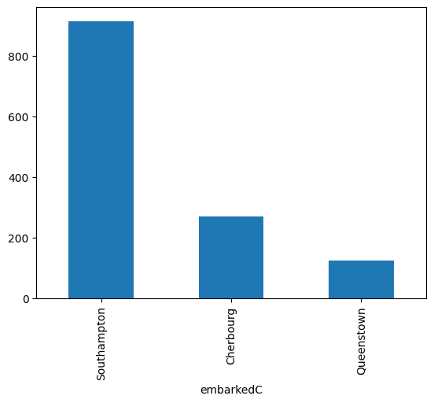
We can then apply the matplotlib functionality to update/modify the plot (notice we already read in matplotlib.pyplot as plt.
table.plot.bar()
plt.xticks(rotation = 0)(array([0, 1, 2]),
[Text(0, 0, 'Southampton'),
Text(1, 0, 'Cherbourg'),
Text(2, 0, 'Queenstown')])
Alternatively, we can use the slightly more flexible .plot() method on a series where we specify the kind= of the plot to create.
table.plot(kind = "bar", rot = 0) #can use additional arg rather than additional function call<Axes: xlabel='embarkedC'>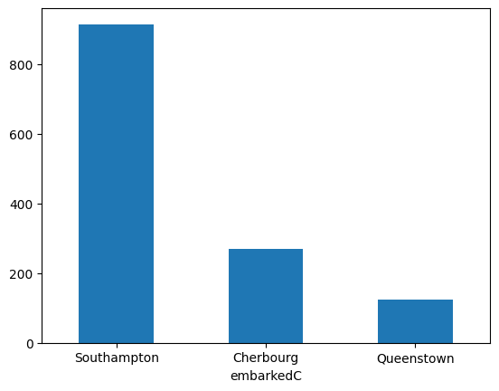
Where we really gain is when trying to bring in a multivariate relationship
- For instance, we can color the bars by another categorical variable in the
DataFramepretty easily!
First, create the contingency table for two variables (remember this returns a DataFrame)
table = pd.crosstab(sub_titanic_data["embarkedC"], sub_titanic_data["survivedC"])
print(type(table))
table<class 'pandas.core.frame.DataFrame'>| survivedC | Died | Survived |
|---|---|---|
| embarkedC | ||
| Cherbourg | 120 | 150 |
| Queenstown | 79 | 44 |
| Southampton | 610 | 304 |
Now let’s use the .plot.bar() method on this DataFrame with the stacked = True argument.
table.plot.bar(stacked = True, rot = 0)<Axes: xlabel='embarkedC'>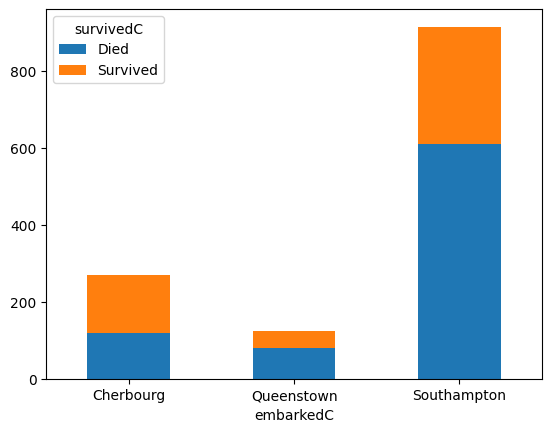
We can do this with the .plot() method as well.
table.plot(stacked = True, kind = "bar", rot = 0)<Axes: xlabel='embarkedC'>If we want side-by-side bar plots, we can just remove the stacked = True argument.
table.plot.bar(rot = 0)<Axes: xlabel='embarkedC'>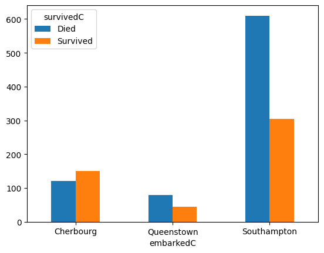
Plotting Numeric Variables
Recall: Numeric variable have entries that are a numerical value where math can be performed
Goal: describe the shape, center, and spread of the distribution
- Shape can be described well via a histogram or density plot
- Boxplots provide a good summary of the distribution as well
Histogram with pandas
Histogram - Bin data to show distribution of observations - Done via .plot.hist() or .plot(kind = "hist") method on a series or data frame - A .hist() method also exists!
First, the .plot.hist() method on a series (we’ll also fix it up a bit using matplotlib.pyplot functionality.
sub_titanic_data["age"].plot.hist()
plt.xlabel("Age")
plt.title("Histogram of Age for Titanic Passengers")Text(0.5, 1.0, 'Histogram of Age for Titanic Passengers')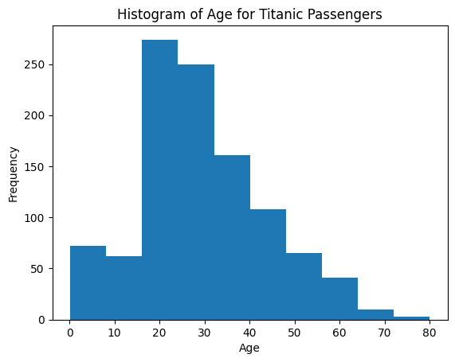
- Specify # of bins with
bins = - Note we also return the series in a different way here (just to show you can use either)
#can add label/title here (xlabel doesn't seem to work as intended...)
#instead we'll use the .set() method on the histogram to set the xlabel
sub_titanic_data.age.plot.hist(bins = 20, title = "Histogram of Age for Titanic Passengers") \
.set(xlabel = "Age")[Text(0.5, 0, 'Age')]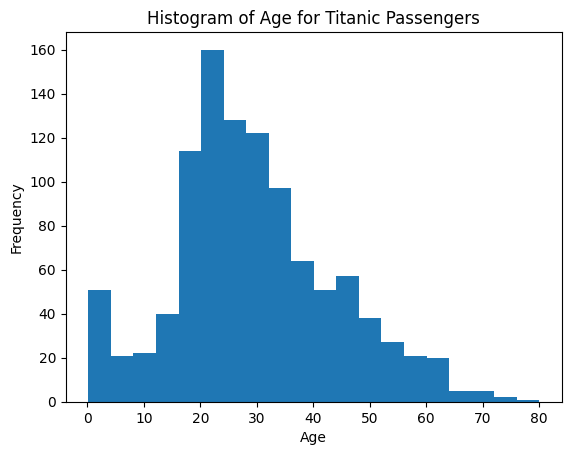
Overlaying Two Histograms
- To overlay two histograms on the same graph, create two histograms and use
alpha = 0-1 value. This sets the transparency.- alpha = 1 is not transparent at all
- alpha = 0 is completely transparent
Let’s create histograms of age for those that Survived and those that Died. - We should also set up the bins manually so they are the same bin widths and locations (for better comparison) - bins can be specified via the bins = argument
bin_ends = 10
bins = [i*max(sub_titanic_data.age)/bin_ends for i in range(0, bin_ends + 1)]
print(bins)[0.0, 8.0, 16.0, 24.0, 32.0, 40.0, 48.0, 56.0, 64.0, 72.0, 80.0]- Obtain subsets of data needed
age_died = sub_titanic_data.loc[sub_titanic_data.survivedC == "Died", "age"] #series for died
age_survived = sub_titanic_data.loc[sub_titanic_data.survivedC == "Survived", "age"] #series for survivedCreate the plot using the .plot.hist() method. By creating two plots in the same cell, they will be overlayed. - Notice the use of label() to automatically create a legend (similar to what we did with matplotlib
age_died.plot.hist(bins = bins, alpha = 0.5, label = "Died",
title = "Ages for those that survived vs those that died") \
.set(xlabel = "Age")
age_survived.plot.hist(bins = bins, alpha = 0.5, label = "Survived")
plt.legend()<matplotlib.legend.Legend at 0x788606f92950>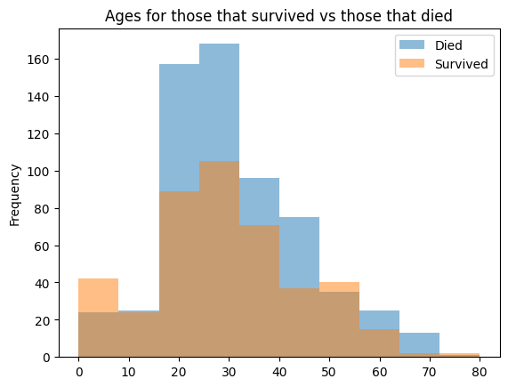
pandaswill automatically overlay data from different columns of the same data frame- That is, if we use the
plot.hist()method on a data frame with two numeric variables, it will plot both of those on the same plot- To use that here we need to make that kind of data frame…
- Need two columns, one representing ages for those that survived and one for those that died
age_died = sub_titanic_data.loc[sub_titanic_data.survivedC == "Died", "age"] #809 values
age_survived = sub_titanic_data.loc[sub_titanic_data.survivedC == "Survived", "age"] #500 values- Note the difference in the number of observations! This means that putting them together into a data frame isn’t super seamless.
temp = pd.DataFrame(zip(age_died, age_survived), columns = ["Died", "Survived"])
print(temp.shape)
#only has 500 rows instead of 809!
temp.plot.hist(alpha = 0.5)(500, 2)<Axes: ylabel='Frequency'>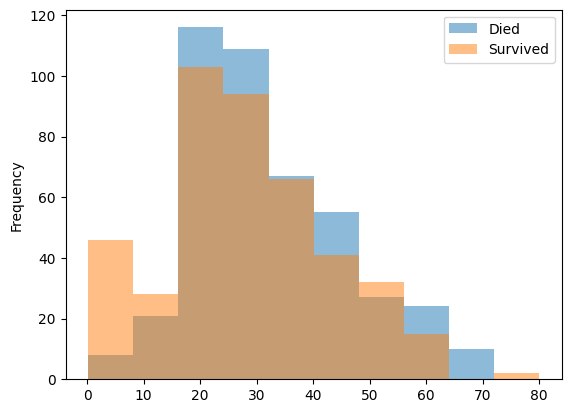
How do we fix that?
- We can fill in
NaNvalues for the shorter series so they end up the same length.
- We can fill in
age_survived = pd.concat([age_survived, pd.Series([np.nan for _ in range(308)])])
age_survived| 0 | |
|---|---|
| 0 | 29.0000 |
| 1 | 0.9167 |
| 5 | 48.0000 |
| 6 | 63.0000 |
| 8 | 53.0000 |
| ... | ... |
| 303 | NaN |
| 304 | NaN |
| 305 | NaN |
| 306 | NaN |
| 307 | NaN |
808 rows × 1 columns
- Now we can zip these together into a data frame and plot as we’d like!
plotting_df = pd.DataFrame(zip(age_died, age_survived),
columns = ["Died", "Survived"])
print(plotting_df.shape)
plotting_df.plot.hist(alpha = 0.5, title = "Ages for those that survived vs those that died") \
.set(xlabel = "Age")(808, 2)[Text(0.5, 0, 'Age')]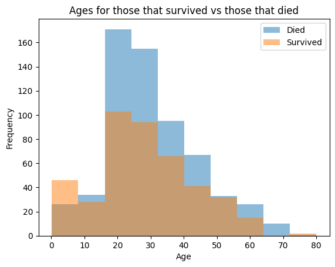
Side-by-side Histograms
- Can place two graphs next to each other with
.hist()method (notice this is a different method!)- Specify a
columnvariable and abyvariable
- Specify a
- These don’t have the same bin widths
sub_titanic_data.hist(column = "age", by = "survivedC")FutureWarning: The default of observed=False is deprecated and will be changed to True in a future version of pandas. Pass observed=False to retain current behavior or observed=True to adopt the future default and silence this warning.
sub_titanic_data.hist(column = "age", by = "survivedC")array([<Axes: title={'center': 'Died'}>,
<Axes: title={'center': 'Survived'}>], dtype=object)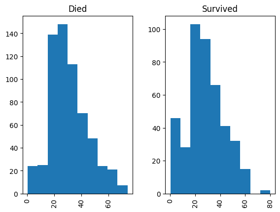
- We could also use the
.groupby()functionality but the result is a bit subpar as it doesn’t label the graphs.
sub_titanic_data[["age", "survivedC"]].groupby("survivedC").hist()FutureWarning: The default of observed=False is deprecated and will be changed to True in a future version of pandas. Pass observed=False to retain current behavior or observed=True to adopt the future default and silence this warning.
sub_titanic_data[["age", "survivedC"]].groupby("survivedC").hist()| 0 | |
|---|---|
| survivedC | |
| Died | [[Axes(0.125,0.11;0.775x0.77)]] |
| Survived | [[Axes(0.125,0.11;0.775x0.77)]] |
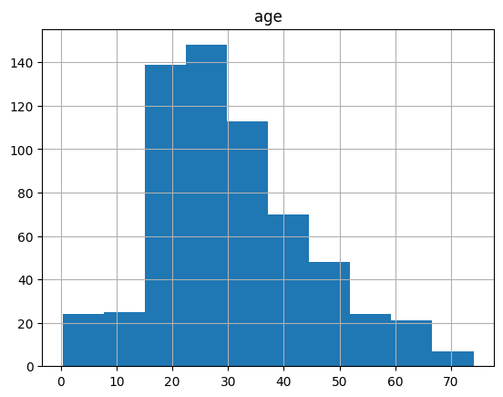
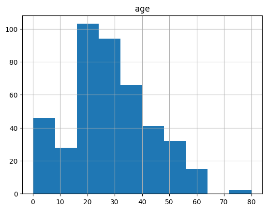
Kernel smoother with pandas
- Kernel Smoother - Smoothed version of a histogram
- ‘Kernel’ determines weight given to nearby points
- Use
.plot.density()orplot(kind = "density")method bw_method = #specifies how ‘smooth’ you want the graph to be- smaller values imply using a smaller bandwidth (more variability)
- larger values imply using a larger bandwidth (more smooth)
- Use
sub_titanic_data.age.plot.density(bw_method = 0.1, label = "bw = 0.1",
title = "Density Plots of Age for Titanic Passengers")
sub_titanic_data.age.plot.density(bw_method = 0.25, label = "bw = 0.25")
sub_titanic_data.age.plot.density(bw_method = 0.5, label = "bw = 0.5")
plt.legend()<matplotlib.legend.Legend at 0x78860547a950>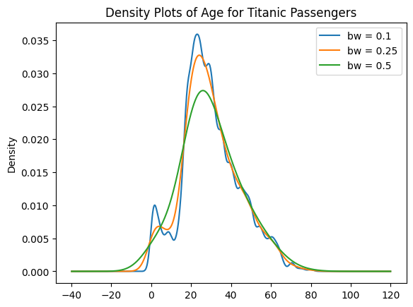
Boxplots with pandas
- Boxplot - Provides the five number summary in a graph
- Min, Q1, Median, Q3, Max
- Often show possible outliers as well
- Use
.plot.box()orplot(kind = "box")method - A
.boxplot()method also exists!
- Min, Q1, Median, Q3, Max
First the .plot.box() method on a series
sub_titanic_data.age.plot.box()<Axes: >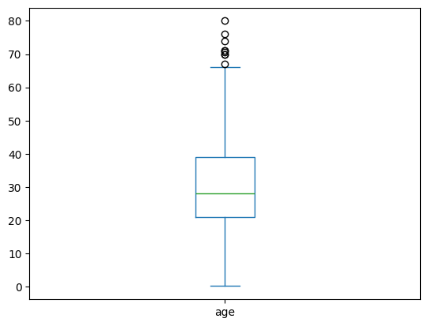
- Fine.. but usually we want to compare these boxplots across another variable. To do this the
.boxplot()method on a data frame is very useful! - Similar to the
.hist()method we specify acolumnandbyvariable
sub_titanic_data.boxplot(column = ["age"], by = "survivedC")<Axes: title={'center': 'age'}, xlabel='survivedC'>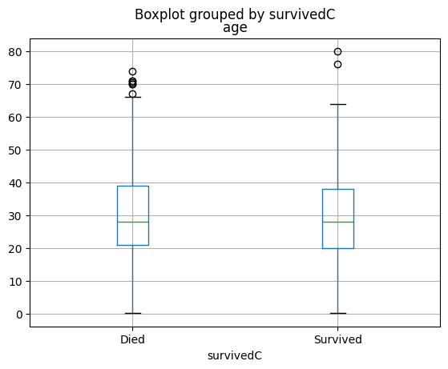
Scatter Plots with pandas
- Scatter Plot - graphs points corresponding to each observation
- Use
.plot.scatter()orplot(kind = "scatter")method on a data frame withx =, andy =
- Use
sub_titanic_data.plot.scatter(x = "age", y = "fare", title = "Scatter plots rule!")<Axes: title={'center': 'Scatter plots rule!'}, xlabel='age', ylabel='fare'>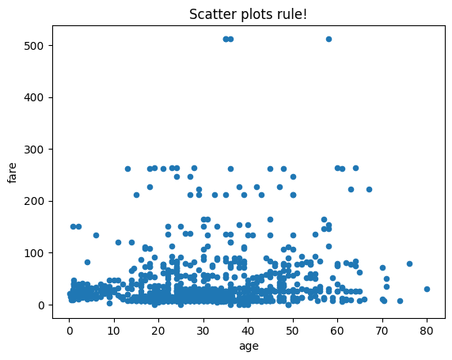
- Easy to modify! Check the help for arguments (specifically the keyword arguments that get passed to
.plot()) but we can specify differentmarkervalues, atitle, and more!
#c = color, marker is a matplotlib option
sub_titanic_data.plot.scatter(x = "age", y = "fare", c = "Red", marker = "v", title = "Oh, V's!")<Axes: title={'center': "Oh, V's!"}, xlabel='age', ylabel='fare'>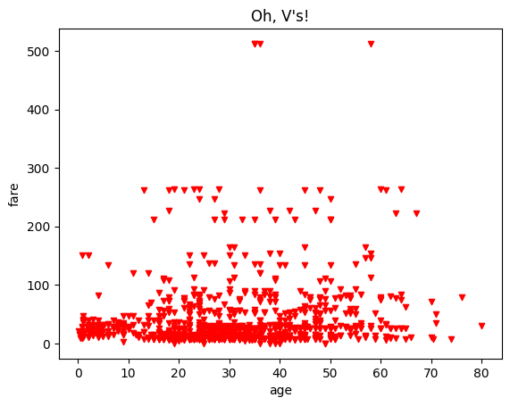
- We can easily modify aspects of the plot based on a variable as well!
- This is great as it allows us to bring a third varaible in
- Here we color by a category variable
#s for size (should be a numeric column), cmap can be used with c for specifying color scales
sub_titanic_data.plot.scatter(x = "age", y = "fare", c = "survivedC", cmap = "viridis", s = 10)<Axes: xlabel='age', ylabel='fare'>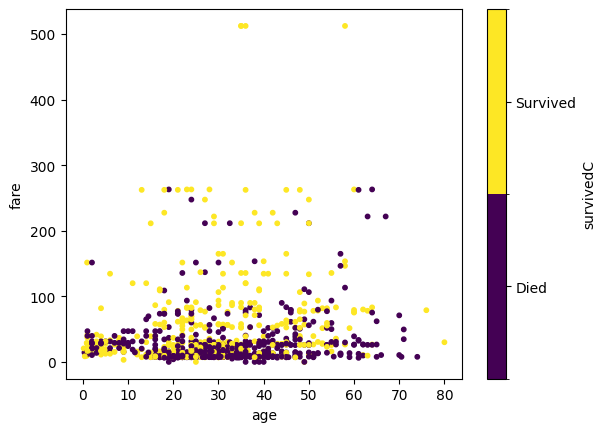
Matrix of Scatter Plots
.plotting.scatter_matrix()function will produce basic graphs showing relationships!- Here we grab the numeric variables from the data frame
pd.plotting.scatter_matrix(sub_titanic_data[["age", "fare", "survived", "sibsp"]])array([[<Axes: xlabel='age', ylabel='age'>,
<Axes: xlabel='fare', ylabel='age'>,
<Axes: xlabel='survived', ylabel='age'>,
<Axes: xlabel='sibsp', ylabel='age'>],
[<Axes: xlabel='age', ylabel='fare'>,
<Axes: xlabel='fare', ylabel='fare'>,
<Axes: xlabel='survived', ylabel='fare'>,
<Axes: xlabel='sibsp', ylabel='fare'>],
[<Axes: xlabel='age', ylabel='survived'>,
<Axes: xlabel='fare', ylabel='survived'>,
<Axes: xlabel='survived', ylabel='survived'>,
<Axes: xlabel='sibsp', ylabel='survived'>],
[<Axes: xlabel='age', ylabel='sibsp'>,
<Axes: xlabel='fare', ylabel='sibsp'>,
<Axes: xlabel='survived', ylabel='sibsp'>,
<Axes: xlabel='sibsp', ylabel='sibsp'>]], dtype=object)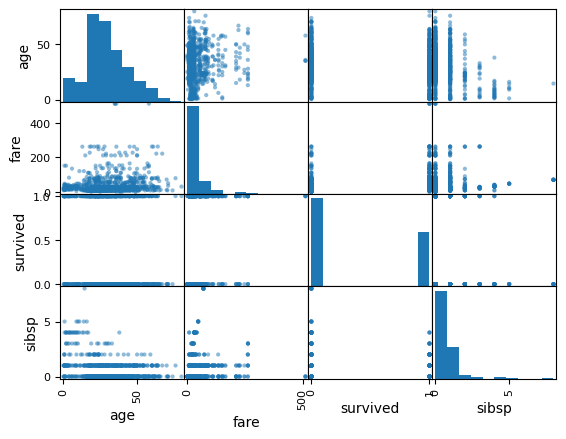
Quick Video
This video shows an example of using pandas for plotting. Remember to pop the video out into the full player.
The notebook written in the video is available here.
from IPython.display import IFrame
IFrame(src="https://ncsu.hosted.panopto.com/Panopto/Pages/Embed.aspx?id=f4e2bc16-1757-4f1e-8df9-b103016c97d2&autoplay=false&offerviewer=true&showtitle=true&showbrand=true&captions=false&interactivity=all", height="405", width="720")Recap
Creating visualizations is an important part of an EDA
Goal: Describe the distribution
pandashas nice functionality for creating common plots.plot()method
We only covered a few plots but the concepts are similar for others
May want to check out seaborn for quick ways to do fancier plots!
If you are on the course website, use the table of contents on the left or the arrows at the bottom of this page to navigate to the next learning material!
If you are on Google Colab, head back to our course website for our next lesson!